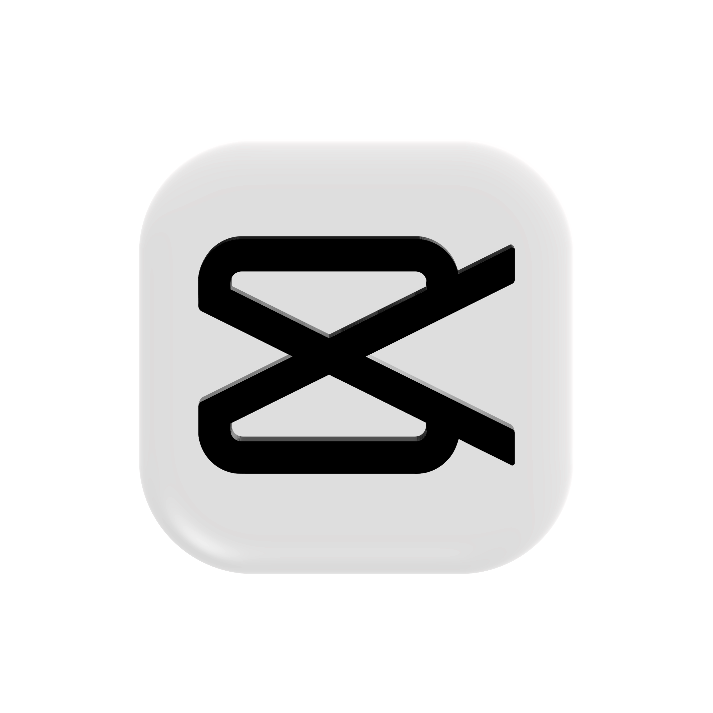
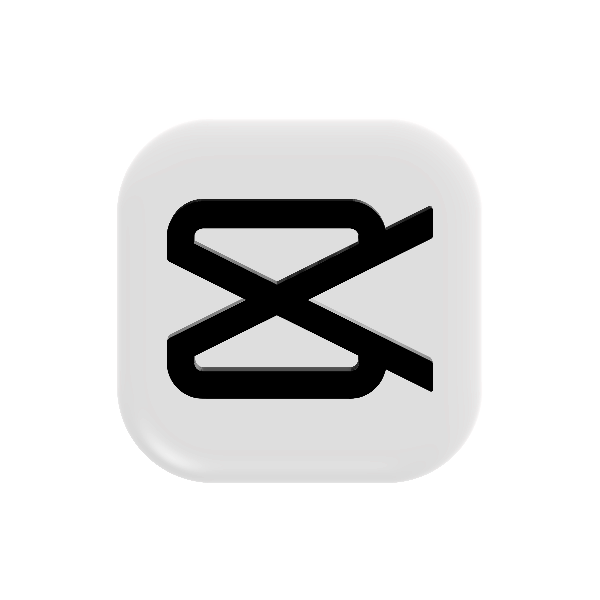

About Me 🙋♂️
Yoo Wassup! I'm Lester, a chill guy from Cogon, Compostela, Cebu. I'm deeply passionate about all things digital and musical. I'm currently honing my skills in web development, driven by the hope that the Internet never goes down. My motto, is **"DO WHAT EXITES"** — Kelly Wakasa.
My Hobbies & Interests 🎧🎮
When I'm not coding, you can find me:
- Reading manga/manhwa for escapism.
- Playing FPS video games.
- Listening to **hardcore music** like RAVE, DUBSTEP, DNB, and HOUSE.
- *BEATBOXING* (a hidden talent, perhaps!).
- SINGING (mostly in the shower).
- Watching captivating TV shows and movies.
Technical Skills 💻
| Skill | Mastery Level | Experience |
|---|---|---|
| Video Editing | Beginner/Intermediate | 3 Year |
| Graphic Design | Beginner/Intermediate | 2 Years |
| Coding C / Java / HTML / CSS | Beginner | 2 Years |


 



Favorite Media
My Go-To Music in the Shower (Audio)
BEST VIDEO EVER
Education Background
| Institution | Degree/Course | Years Attended |
|---|---|---|
| Cebu Technological University | Bachelor of Science in Information Technology | 2023 - Present |
| Compostela National High School | High School Diploma | 2016 - 2023 |
| Compostela Central School | Elementary | 2010 - 2016 |